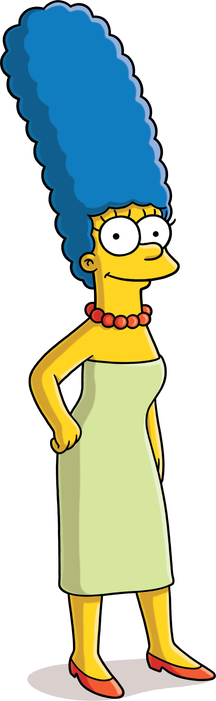

HIPERVINCULOS EXTERNOS
Liga a youtube
Liga a página oficial IPN
Liga a página CECyT No.3
HIPER VINCULOS INTERNOS
Homero
Marge
Bart
Lisa
Maggie
HOMERO
Edad: 36 años
Peso: Mucho (120 kg. aprox.)
Pelo: Poco
Estado civil: Casado con Marge Bouvier
Hijos: 3 hijos. Bart, Lisa y Maggie.
Profesión: Inspector de seguridad en la central nuclear de Springfield.
Personalidad: Irresponsable, infantil, lento y torpe.
Comida favorita: Donas, cacahuetes tostados con miel, chuletas de cerdo, hamburguesas y cualquier otra cosa que engorde.
Bebida favorita: Cerveza Duff.
Pasatiempos favoritos: Jugar a los bolos, tumbarse a ver la tele, ir a la Taberna de Moe y dormir.
Frases: ¡Ouh!, ¡Woo-hoo!, Mmmmm..., ¡Pequeño demonio!
Tres cosas que te harán triunfar en la vida (según Homero Simpson): 1. No digas que he sido yo, 2.¡Qué buena idea, jefe! y, 3. Estaba así cuando llegué.
HIPER VINLCULOS INTERNOS
MARGE

Edad:35 años
Pelo: Largo, alto y azul
Estado civil: Casada con Homero
Hijos: 3 hijos. Bart, Lisa y Maggie.
Profesión: Ama de casa.
Personalidad: Tiene mucha paciencia y es la persona que da un poco de coherencia a la familia junto con Lisa.
Pasatiempos favoritos: Limpieza compulsiva, cocinar, ir de compras, jugar a los bolos y dar consejos a sus vecinos.
Frases: ¡¡Mmggh!!, ¡Ay, Homero!, ¡¡Homero!!, ¡¡Hoooomeeerrrrooooo!! y ¡¡Bart, no!!
HIPER VINLCULOS INTERNOS
BART
Edad: 10 años
Estado civil: Soltero
Padres: Homero y Marge.
vProfesión: Estudiante y problemático.
Personalidad: Latoso por naturaleza.
Pasatiempos favoritos: Vandalismo en su vecindario, molestar a Lisa, le gusta el skate, nunca se separa de la pizarra en la que escribe sus castigos, ve las series del payaso Krusty y Tomy & Daly, hace llamadas de broma la Taberna de Moe y, en general, se dedica a destruir cosas.
Ídolo: el payaso Krusty.
Mejor amigo: Milhouse Van Houten.
Frases: ¡Ay, caramba!, ¡Yo no fui!, ¡¡De fábula, viejo!!
HIPER VINLCULOS INTERNOS
LISA
Edad: 8 años
Estado civil: Soltera
Padres: Homero y Marge.
Profesión: Brillante estudiante, saxofonista y "niña perfecta".
Personalidad: Rebelde, feminista y naturalista.
Comida favorita: Lisa es vegetariana.
Pasatiempos favoritos: Tocar el saxofón, ver la serie Tomy & Daly, estudiar y protestar por cualquier cosa.
Frases: Si alguien me necesita estaré en mi cuarto, ¡¡Baaaart!!, ¡Detente Bart!, ¡Bart, eres un tonto!.
HIPER VINLCULOS INTERNOS
MAGGIE
Edad: 1 año
Estado civil: Soltera
Padres: Homero y Marge.
Profesión: (sobre)Vivir.
Personalidad: Buen humor y aventurera.
Objetos favoritos: Su chupete, la televisión y sus juguetes.
Pasatiempos favoritos: Le encanta ver las series de Los duendecillos alegres, Tomy & Daly y chupar su chupete.
Su primera palabra: Papá.
HIPER VINLCULOS INTERNOS
Si quieres saber mas de esta familia da clic aquí
Si quieres contactarme, escribe un correo
Intro de los Simpsons